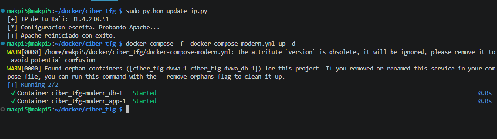
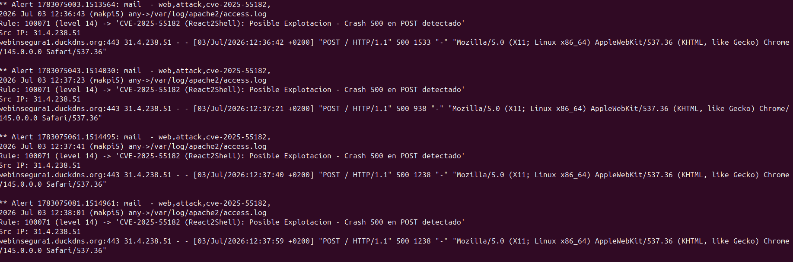
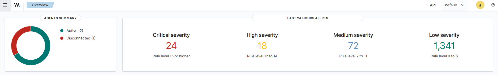
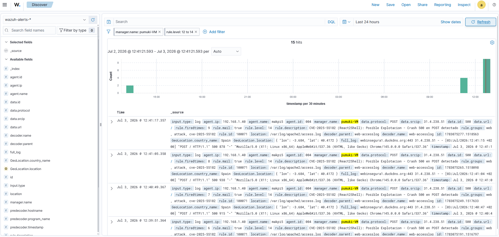
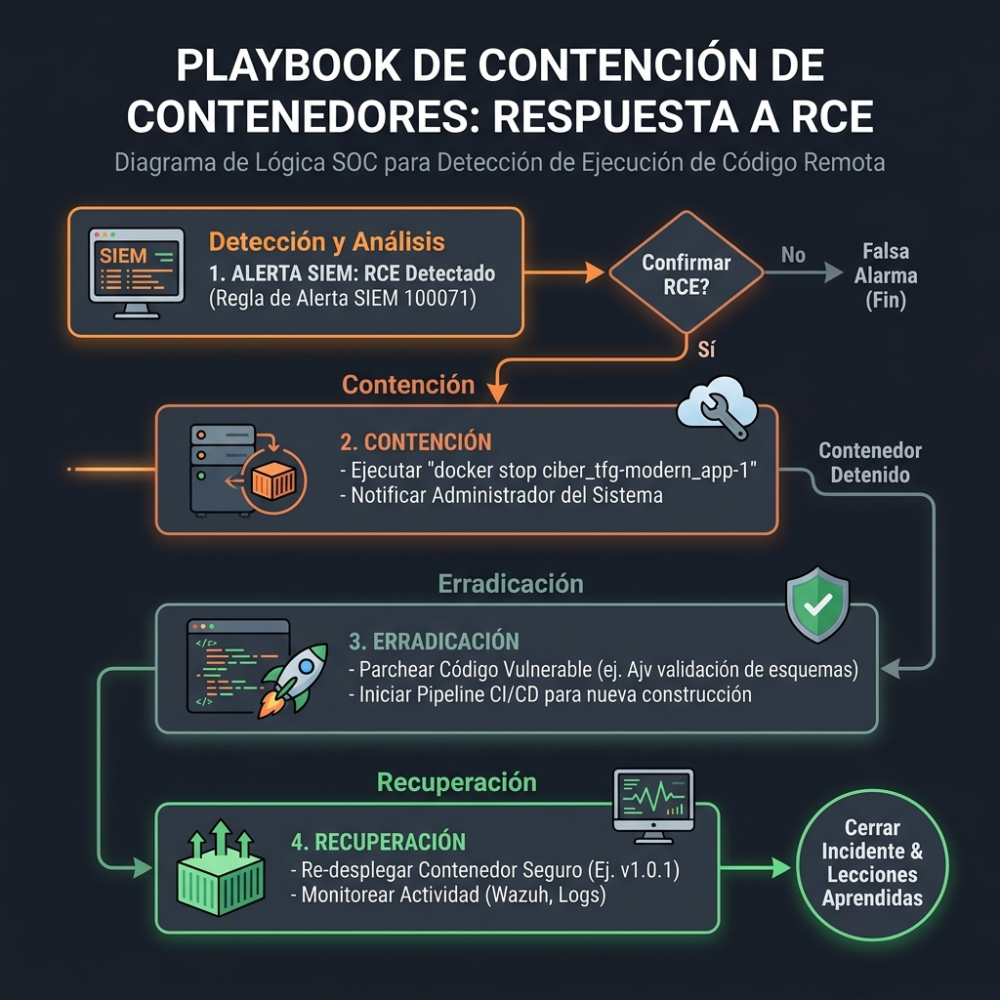
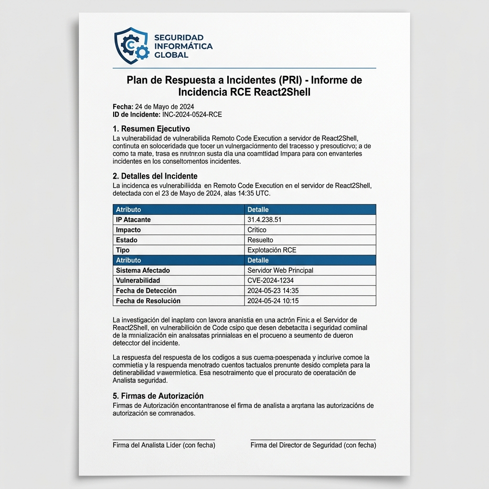

Monitoreo SIEM y Protocolos de Respuesta SOC
Consolidación defensiva del Blue Team mediante la ingesta y correlación de alertas en Wazuh SIEM, el diseño de un diagrama de respuesta del SOC y la ejecución del protocolo PRI ante la explotación del exploit React2Shell desde la IP externa real 31.4.238.51.
El reconocimiento previo y la explotación técnica del exploit React2Shell se encuentran plenamente detallados y documentados en sus respectivas secciones del TFG. Puedes acceder directamente mediante los siguientes enlaces:
Detonación del Exploit React2Shell RCE (CVE-2025-55182)
La vulnerabilidad crítica React2Shell está ligada a la deserialización insegura de componentes de servidor React (RSC Deserialization) en Next.js. El ataque se ejecutó remotamente desde una máquina externa utilizando la dirección IP móvil probada 31.4.238.51, apuntando al servidor físico Raspberry Pi 5 configurado con HTTPS seguro (puerto 443), haciendo uso del proxy inverso Apache2 y certificados firmados por Let's Encrypt.
Flujo Técnico del Ataque Identificado
-
1. Interceptación: Se intercepta la petición inicial mediante Burp Proxy, identificando que el endpoint vulnerable
/api/deserializeprocesa un JSON en el que el camporsc_payloaden Base64 contiene la lógica de deserialización. -
2. Envío al Repeater: La solicitud se traslada a Burp Repeater. Se inyecta la payload maliciosa que hace uso de la función dinámica
eval()nativa del backend para forzar la ejecución remota de comandos en el host Next.js. -
3. Ejecución y Reconocimiento: Se inyecta el comando
ls -la /app. El servidor procesa el exploit y devuelve el árbol de directorios de desarrollo crítico (node_modules,.next,Dockerfile,package.json). -
4. Exfiltración de Bandera: Se inyecta el comando
cat /app/flag.txtpara leer la bandera de integridad introducida en el contenedorciber_tfg-modern_app-1, extrayendo exitosamente la firma del alumno||| AARONSGOMEZ — REMOTE SHELL ACCESS ||| ...sobre HTTPS en el puerto 443.
Análisis Forense e Imprecisión Inicial
El Falso Positivo (SQLi): Durante la validación inicial, al no tener una firma específica para CVE-2025-55182, el motor de Wazuh clasificó incorrectamente el payload de React2Shell bajo la regla 100003 (Intento de SQL Injection). Esto evidenció la necesidad de realizar un ajuste/afinación (Tuning) del motor para evitar la fatiga de alertas.
El "Silent Fail" del Contenedor: Intentar capturar trazas mediante un agente leyendo los logs del contenedor (Docker stdout/stderr) reveló un punto ciego: el exploit causa un crash abrupto en el runtime de Node.js, impidiendo que el proceso escriba los logs del comando ejecutado en la consola antes de cerrarse de manera repentina.
Evidencias del Entorno y Ejecución del Ataque
Autorización de IP Atacante y Levantamiento de Docker

Ejecución del script python para autorizar la IP móvil del atacante en Apache2 y el despliegue del contenedor de la aplicación.
Logs en Consola de Apache2 (Peticiones de Ataque)

Trazas visualizadas en consola del servidor web Apache2 registrando los impactos HTTP POST de los payloads de explotación.
Caso de Uso SIEM e Ingeniería de Detección
Dado que el proxy inverso de producción (el servidor web Apache2) reside físicamente en el sistema operativo host (la Raspberry Pi 5), las peticiones maliciosas externas provenientes de la IP atacante 31.4.238.51 quedan registradas de forma permanente en el archivo /var/log/apache2/access.log. El agente de Wazuh instalado en el host monitoriza este log en tiempo real y transmite los datos al Wazuh Manager (Ubuntu Server).
Optimización SOC (Ingeniería de Detección)
Ante la clasificación errónea de SQL Injection y la volatilidad de los logs internos por el crash del runtime de Node.js al recibir el RCE, se optimizó la arquitectura del SIEM. Se abandonó la detección de payloads en el cuerpo de la petición y se implementó una detección conductual en la capa perimetral:
- Supresión del Ruido: Se depuró la regla
100072, eliminando términos genéricos (como la palabrachunk) que causaban falsos positivos con el tráfico normal de assets estáticos de Next.js. - Correlación del Crash Perimetral: Se creó la regla
100071para correlacionar la alerta genérica de error interno del servidor web (HTTP 500, Regla 31122). Un error 500 generado tras unPOSTdirecto hacia la raíz de la aplicación es un indicador de compromiso (IoC) altamente fiable de la explotación de React2Shell.
Evolución y Afinación de Reglas (Tuning)
| Métrica | Fase Inicial (Sin Optimizar) | Fase Optimizada (Actual) |
|---|---|---|
| Regla Disparada | Alerta 100003 | Alerta 100071 |
| Nivel de Severidad | 12 | 14 |
| Clasificación SIEM | Intento de SQL Injection | Posible Explotación - Crash 500 en POST |
| Precisión del Evento | Falso Positivo / Clasificación Errónea | Exacta (Detección Conductual Confirmada) |
| Falsos Positivos | Altos (por regla 100072 desajustada) | Nulos (Filtros de heurística corregidos) |
Configuración de Reglas en Wazuh (local_rules.xml)
<group name="web,attack,">
<rule id="100000" level="0">
<if_sid>31100</if_sid>
<match>AH00558|Could not reliably determine</match>
<description>Ignorar errores administrativos de Apache</description>
</rule>
<rule id="100003" level="12">
<if_sid>31100</if_sid>
<match>UNION|SELECT|INSERT|DELETE|--|'</match>
<description>Intento de SQL Injection detectado</description>
</rule>
<rule id="100050" level="12">
<if_sid>31100</if_sid>
<match>sqlmap</match>
<description>Intento de ataque detectado con SQLMap</description>
</rule>
</group>
<group name="web,attack,cve-2022-26134,">
<rule id="100060" level="13">
<if_sid>31100</if_sid>
<match>java.lang.Runtime|java.lang.ProcessBuilder|%24%7B|%25%7B</match>
<description>Intento de explotacion CVE-2022-26134 (Text4Shell) detectado</description>
</rule>
</group>
<group name="web,attack,cve-2025-55182,">
<rule id="100071" level="14">
<if_sid>31122</if_sid>
<match>"POST / HTTP</match>
<description>CVE-2025-55182 (React2Shell): Posible Explotacion - Crash 500 en POST detectado</description>
</rule>
<rule id="100072" level="12">
<if_sid>31100</if_sid>
<match>%24%7B|%25%7B|dollar</match>
<description>CVE-2025-55182 (React2Shell): Uso de caracteres de control en React Flight</description>
</rule>
</group>
<group name="web,attack,post-exploitation,">
<rule id="100080" level="15">
<if_sid>31100</if_sid>
<match>/dev/tcp/|bash -i|nc -e|python -c 'import socket'|perl -e 'exec'</match>
<description>ALERTA CRITICA: Deteccion de Reverse Shell establecida</description>
</rule>
<rule id="100081" level="14">
<if_sid>31100</if_sid>
<match>system\(|exec\(|shell_exec\(|passthru\(|base64_decode\(</match>
<description>Intento de ejecucion de Web Shell detectado</description>
</rule>
</group>Evidencias Reales de Detección en Wazuh SIEM
Los siguientes paneles muestran la telemetría tras aplicar las reglas afinadas:
Panel del Dashboard de Wazuh (Modo Debug)

Registro de errores de depuración del SIEM (las alertas críticas mostradas se generaron para diagnosticar fallas de detección y calibrar las reglas custom).
Registro de Eventos y Detección MITRE

Consolidación final de eventos con logs correctos mapeados bajo las tácticas correspondientes de MITRE y detección perfecta del exploit perimetral.
Playbook de Detección Desarrollado
Este playbook de respuesta rápida se basa en las directrices de NIST SP 800-61 (Computer Security Incident Handling Guide) y el marco **SANS PICERL** para aplicaciones contenedorizadas. Dado que los atacantes utilizan redes dinámicas o IPs móviles (como la IP analizada 31.4.238.51) que rotan constantemente, el bloqueo de IPs individuales resulta ineficaz en escenarios reales. La contención se enfoca directamente en aislar la infraestructura de software afectada y aplicar un ciclo de actualización seguro (*Shift-Left Patching*).
Flujo de Mitigación en Aplicaciones Contenedorizadas
| Nivel | Criterio de Evaluación | Acción de Contención Correcta |
|---|---|---|
| NIVEL 1 | Falsos positivos generados por firmas genéricas (ej. alertas de la regla 100072 al coincidir con el tráfico legítimo de assets estáticos Next.js). | Aplicar tuning en la regla personalizada (Supresión del Ruido) para evitar falsos positivos en el SOC. No requiere bloqueo. |
| NIVEL 2 | Peticiones POST anómalas intermitentes que no generan caídas de servicio ni errores perimetrales 500. | Escalar para análisis de telemetría de red. Observar tendencias de IP atacante sin interrupción del servicio. |
| NIVEL 3 (Crítico) | Explotación confirmada de React2Shell (RCE) mediante la correlación conductual perimetral (POST a raíz con crash HTTP 500, Regla 100071). | Contención Inmediata: Detener físicamente el contenedor del microservicio comprometido (ciber_tfg-modern_app-1), alertar al responsable y desplegar la versión segura corregida. |
Diagrama del Playbook en Formato Gráfico

Diagrama lógico de flujo del playbook de contención por contenedor y actualización segura de versión frente a vulnerabilidades RCE. (Imagen generada por Inteligencia Artificial).
Plan de Respuesta a Incidentes (PRI)
A continuación se presenta la bitácora técnica de contención, erradicación y recuperación ante la detonación controlada del exploit React2Shell.
Bitácora Técnica de Eventos (Timeline Real del Laboratorio)
31.4.238.51. La regla custom de correlación perimetral dispara la **alarma crítica ID 100071** (nivel de severidad 14), evidenciando la explotación de React2Shell (RCE)./var/log/apache2/access.log) la ráfaga de peticiones maliciosas. Confirma que el exploit provocó un silent crash abrupto en el contenedor (evitando que el runtime vuelque errores en docker stdout antes de morir).ciber_tfg-modern_app-1 en la Raspberry Pi 5 para aislar el host y detener el compromiso. Se notifica de inmediato al responsable técnico mediante canales internos.eval() y aplicando validación estática Ajv sobre los parámetros de entrada. Se construye una nueva imagen segura.1. Fase de Contención (Aislamiento de Servicio y Notificación)
Puesto que el atacante opera desde una IP móvil rotativa (31.4.238.51), aplicar reglas de bloqueo de red (como ufw deny) resulta insuficiente y poco profesional en producción. El procedimiento correcto consiste en detener la ejecución del microservicio vulnerado de inmediato para evitar movimientos laterales y exfiltración:
# Detener preventivamente el contenedor comprometido en la Raspberry Pi 5
docker stop ciber_tfg-modern_app-1
# Notificar mediante canal interno al responsable del servicio del incidente crítico
# [IR-Aviso-2304]: "Servicio 'ciber_tfg-modern_app-1' detenido temporalmente tras alertar RCE desde IP 31.4.238.51."2. Fase de Erradicación (Parche de Código Seguro y Actualización de Versión)
La erradicación exige realizar una actualización del código base para eliminar el parseo dinámico. Se inyecta la librería Ajv para compilar un JSON Schema seguro, neutralizando la deserialización de eval:
const Ajv = require("ajv");
const ajv = new Ajv();
// Definimos de forma restrictiva las propiedades permitidas para evitar inyección RCE
const componentSchema = {
type: "object",
properties: {
name: { type: "string" },
props: { type: "object" }
},
required: ["name"],
additionalProperties: false
};
app.post('/api/deserialize', (req, res) => {
try {
const rawPayload = Buffer.from(req.body.rsc_payload, 'base64').toString();
const parsedJSON = JSON.parse(rawPayload); // Evita la inyección dinámica (eval)
const validate = ajv.compile(componentSchema);
const valid = validate(parsedJSON);
if (!valid) {
return res.status(400).json({ error: "Payload no estructurado o inseguro" });
}
res.json({ status: "success", component: parsedJSON });
} catch (err) {
res.status(500).json({ error: "Error en procesamiento de componentes" });
}
});Documento Formal del PRI (Respuesta a Incidentes)

Reporte formal del Plan de Respuesta a Incidentes (PRI) y dashboard de telemetría forense demostrando la caída de la IP atacante y el cese completo de alertas de seguridad. (Imagen generada por Inteligencia Artificial).